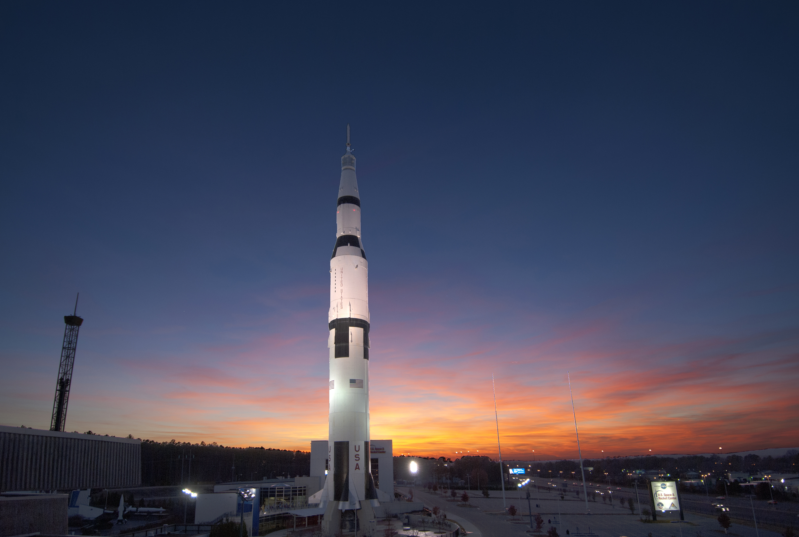
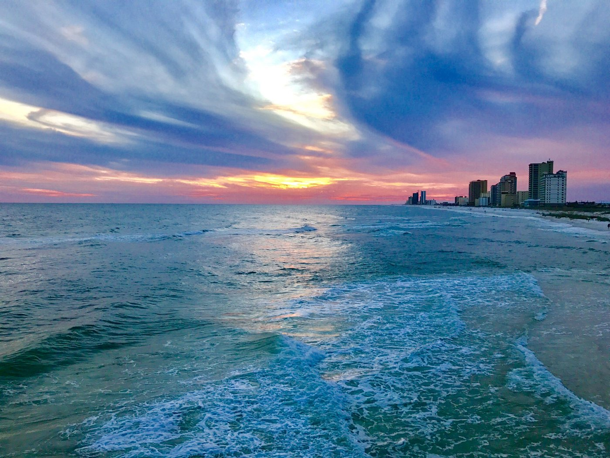

Getting to Know Alabama the Heart of Dixie
Ask people what Alabama is known for and you will get a surprising range of answers: football on autumn Saturdays, rockets on a test stand, white sand beaches, and some of the most important chapters of the American civil rights movement. It is a state of about five million people, and it holds more variety than most visitors expect.
- Statehood
- Dec. 14, 1819
- Capital
- Montgomery
- Nickname
- Yellowhammer State
- Highest point
- 2,413 ft

From the mountains to the Gulf
Alabama stretches roughly from the foothills of the Appalachians in the north to the Gulf Coast in the south. The state's high ground is Cheaha Mountain, and from there the land slopes through rolling piedmont, then across the Black Belt, before flattening into pine forests and the wetlands of the delta near Mobile.
The Rocket City
In the north, Huntsville grew from a cotton town into a center of space science. Engineers at the Marshall Space Flight Center helped send people to the Moon, and the city is still packed with aerospace and engineering jobs. It is not unusual to see a full-size rocket standing near the highway, and you can see a Saturn V up close at the U.S. Space & Rocket Center.

A place that changed the country
The civil rights movement runs straight through Alabama. In Montgomery, the 1955 bus boycott showed what sustained organizing could do. In 1965, marchers set out from Selma and were stopped at the Edmund Pettus Bridge, images from which helped push Congress to pass the Voting Rights Act.
Education and ambition have deep roots here too. Tuskegee became a national symbol of Black achievement, and the Airmen trained there proved their skill in the skies over Europe.
Life on the coast
Down south, the pace changes. Mobile is a port city with a French and Spanish past, and it holds Mardi Gras parades every winter. Across the bay, the shoreline is lined with fishing piers, oyster shacks and sugar-white beaches. On a few summer mornings, locals are lucky enough to see a jubilee and fill their coolers.

Why it matters
Alabama is easy to reduce to a single story, and that is exactly the mistake. Spend a week here and you could tour a space museum, walk across a historic bridge, and end the trip with your feet in the Gulf. Each of those places is worth a closer look, and the notes below are a good place to start.